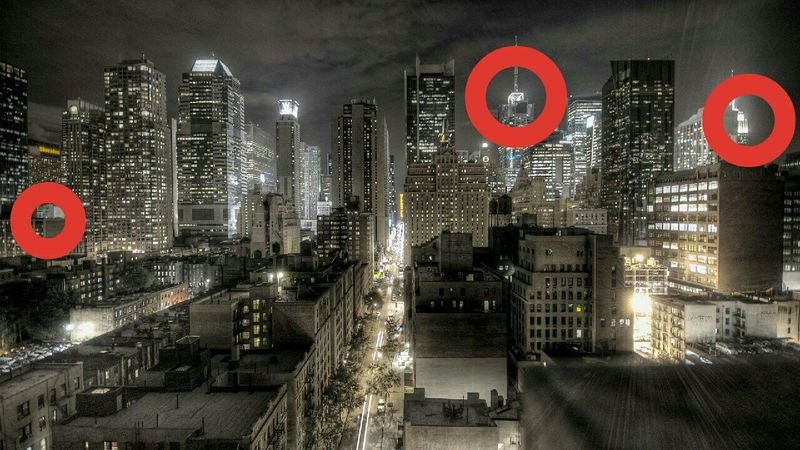
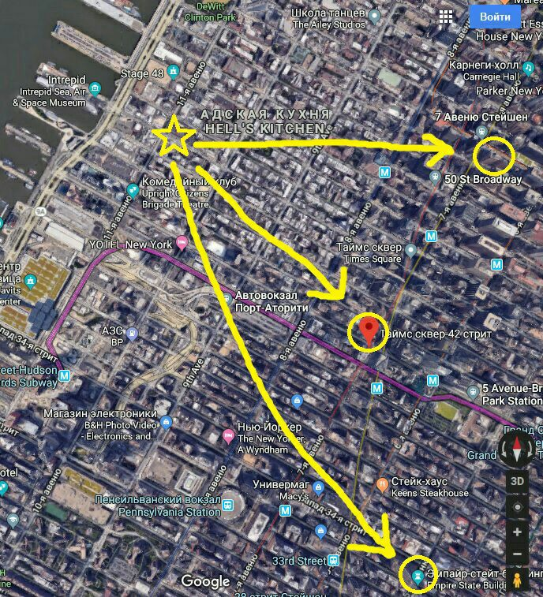

Про New York и глупые фантазии
Есть у меня одна фотография, которая уже наверное лет десять кочует со мной с одного рабочего стола на другой. Уж и не помню, где я её нашёл. Иногда я ловлю себя на том, что разглядываю её минут пять или больше и не могу оторваться. Я вглядываюсь в какое-нибудь окно ближайшего дома и пытаюсь представить, что за ним происходит сейчас и происходило в момент, когда было сделано это фото. Воображение рисует интерьер небольшой комнаты, письменный стол, телевизор в углу, ноутбук, небрежно брошенный на тумбочке возле кровати. Читающего перед сном в постели молодого человека или уже мирно спящего. Представляю его шкаф с одеждой, джинсы, футболки, пачку дешёвого стирального порошка рядом с дешёвой стиральной машиной, пару тройку грязных тарелок в раковине, кроссовки у порога, ключи на крючке возле двери. Его работу каким-нибудь офисным клерком или скромным менеджером по продажам в местном супермаркете, его утренний кофе и утреннюю прохладу, сопровождающую его по пути на работу. Его мать и отца, живущих где-нибудь в небольшом домике в тихом пригороде, каких-нибудь отчаянных белок, которые им досаждают, забираясь на чердак и пряча там припасы. Или енотов, ворующих еду у собаки из миски. Побитый жизнью старый пикап, стоящий возле гаража, аккуратно постриженный газон, пару газет, лежащих на пороге дома...
И всё это сопровождается накатывающим на меня умиротворением. Кажется, что я уже почти слышу то гул большого города, изредка разрываемый сигналами машин, то шум листьев и пение птиц, да мерное урчание моторов изредка проезжающих мимо машин пригорода. Время медленно и размеренно течёт и тянет за собой саму жизнь, проходящую перед твоими глазами. Это как флешбек в какую-то иную жизнь на другой стороне земного шара, которой у тебя никогда не было и никогда не будет.
И вот, однажды у меня появилась сумасшедшая идея или скорее даже желание - найти то место, ту точку, с которой было сделано это фото и сделать своё собственное. Я не знал ничего кроме того, что это скорее всего Нью-Йорк. Идея быстро перешла в разряд нерациональных и практически неосуществимых. Я забыл о ней, но вчера в одном из чатов телеграма спонтанно познакомился с человеком, который несколько месяцев жил в Нью-Йорке. Что-то дёрнуло меня поделиться с ним своей идеей и этим фото. Ему так же стало интересно, и в результате небольшого исследования он указал на примерное место расположения данной точки.
Ниже приведу его реплики:
Привет! Скорее всего это снято с 6й авеню если стоять лицом к сентрал парку. Но нужно уточнить. Там справа точка отправная - высотка. Это таймс сквер 42, там сейчаc большая реклама h&m на крыше.
А в самом правом углу - кусок эмпайр стейт билдинг... Одним словом нужно покрутиться. Мне самому теперь интересно.
Дружище, я нашёл третью точку! Слева - шератон на таймс сквер. Теперь дело техники. Задал ты мне задачку, отпишусь как решу)
Смотри. Похоже на то, что фото снято с какого-то дома в районе hell's kitchen. Верхний кружок это шератон, средний это таймс сквер 42, нижний - эмпайр. Осталось саму точку определить.


Как говорится, мир не без добрых людей. Вряд ли мне позволит финансовое положение в обозримом будущем добраться до Нью-Йорка, но кто знает, как сложится жизнь? Наверное, у каждого человека должны быть какие-то маленькие иррациональные глупые мечты? Да, я знаю, что квартиры в центре Нью Йорка это перимущественно ужасные гадюшники, но мне абсолютно всё-равно, жить я в них не собираюсь.
Нашёл ещё несколько снимков с других ракурсов. Вот этот например, сделан правее.
Сделал отдельную папочку на домашнем сервере, куда теперь складываю фотографии этого места, координаты, отметки и т.п..
Теги: мысли-вслух